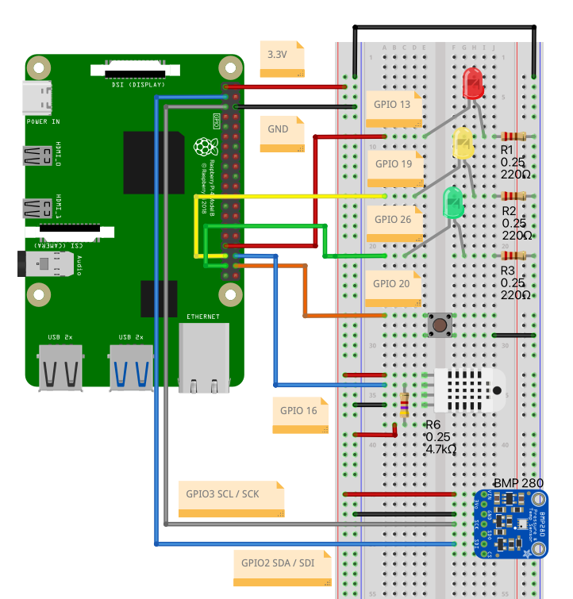

Experimenting with SLMs for IoT Control

Introduction
This chapter explores the implementation of Small Language Models (SLMs) in IoT control systems, demonstrating the possibility of creating a monitoring and control system using edge AI. We’ll integrate these models with physical sensors and actuators, creating an intelligent IoT system capable of natural language interaction. While this implementation shows the potential of integrating AI with physical systems, it also highlights current limitations and areas for improvement.
This chapter builds on the concepts introduced in “Small Language Models (SLMs)” and “Physical Computing with Raspberry Pi.”
The Physical Computing chapter laid the groundwork for interfacing with hardware components using the Raspberry Pi’s GPIO pins. We’ll revisit these concepts, focusing on connecting and interacting with sensors (DHT22 for temperature and humidity, BMP280 for temperature and pressure, and a push-button for digital inputs), as well as controlling actuators (LEDs) in a more sophisticated setup.
We will progress from a simple IoT system to a more advanced platform that combines real-time monitoring, historical data analysis, and natural language processing (NLP).
This chapter demonstrates a progressive evolution through several key stages:
- Basic Sensor Integration
- Hardware interface with DHT22 (temperature/humidity) and BMP280 (temperature/pressure) sensors
- Digital input through a push-button
- Output control via RGB LEDs
- Foundational data collection and device control
- SLM Basic Analysis
- Initial integration with small language models
- Simple observation and reporting of system state
- Demonstration of SLM’s ability to interpret sensor data
- Active Control Implementation
- Direct LED control based on SLM decisions
- Temperature threshold monitoring
- Emergency state detection via button input
- Real-time system state analysis
- Natural Language Interaction
- Free-form command interpretation
- Context-aware responses
- Multiple SLM model support
- Flexible query handling
- Data Logging and Analysis
- Continuous system state recording
- Trend analysis and pattern detection
- Historical data querying
- Performance monitoring
Let’s begin by setting up our hardware and software environment, building upon the foundation established in our previous labs.
Setup
Hardware Setup
Connection Diagram
| Component | GPIO Pin |
|---|---|
| DHT22 | GPIO16 |
| BMP280 - SCL | GPIO03 |
| BMP280 - SDA | GPIO02 |
| Red LED | GPIO13 |
| Yellow LED | GPIO19 |
| Green LED | GPIO26 |
| Button | GPIO20 |

- Raspberry Pi 5 (with an OS installed, as detailed in previous labs)
- DHT22 temperature and humidity sensor
- BMP280 temperature and pressure sensor
- 3 LEDs (red, yellow, green)
- Push button
- 330Ω resistors (3)
- Jumper wires and breadboard
Software Prerequisites
- Install required libraries:
pip install adafruit-circuitpython-dht
pip install adafruit-circuitpython-bmp280Basic Sensor Integration
Let’s create a Python script (monitor.py) to handle the sensors and actuators. This script will contain functions to be called from other scripts later:
import time
import board
import adafruit_dht
import adafruit_bmp280
from gpiozero import LED, Button
DHT22Sensor = adafruit_dht.DHT22(board.D16)
i2c = board.I2C()
bmp280Sensor = adafruit_bmp280.Adafruit_BMP280_I2C(i2c, address=0x76)
bmp280Sensor.sea_level_pressure = 1013.25
ledRed = LED(13)
ledYlw = LED(19)
ledGrn = LED(26)
button = Button(20)
def collect_data():
try:
temperature_dht = DHT22Sensor.temperature
humidity = DHT22Sensor.humidity
temperature_bmp = bmp280Sensor.temperature
pressure = bmp280Sensor.pressure
button_pressed = button.is_pressed
return temperature_dht, humidity, temperature_bmp, pressure, button_pressed
except RuntimeError:
return None, None, None, None, None
def led_status():
ledRedSts = ledRed.is_lit
ledYlwSts = ledYlw.is_lit
ledGrnSts = ledGrn.is_lit
return ledRedSts, ledYlwSts, ledGrnSts
def control_leds(red, yellow, green):
ledRed.on() if red else ledRed.off()
ledYlw.on() if yellow else ledYlw.off()
ledGrn.on() if green else ledGrn.off()We can test the functions using:
while True:
ledRedSts, ledYlwSts, ledGrnSts = led_status()
temp_dht, hum, temp_bmp, press, button_state = collect_data()
#control_leds(True, True, True)
if all(v is not None for v in [temp_dht, hum, temp_bmp, press]):
print(f"DHT22 Temp: {temp_dht:.1f}°C, Humidity: {hum:.1f}%")
print(f"BMP280 Temp: {temp_bmp:.1f}°C, Pressure: {press:.2f}hPa")
print(f"Button {'pressed' if button_state else 'not pressed'}")
print(f"Red LED {'is on' if ledRedSts else 'is off'}")
print(f"Yellow LED {'is on' if ledYlwSts else 'is off'}")
print(f"Green LED {'is on' if ledGrnSts else 'is off'}")
time.sleep(2)
SLM Basic Analysis
Now, let’s create a new script, slm_basic_analysis.py, which will be responsible for analysing the hardware components’ status, according to the following diagram:

The diagram shows the basic analysis system, which consists of:
- Hardware Layer:
- Sensors: DHT22 (temperature/humidity), BMP280 (temperature/pressure)
- Input: Emergency button
- Output: Three LEDs (Red, Yellow, Green)
- monitor.py:
- Handles all hardware interactions
- Provides two main functions:
collect_data(): Reads all sensor valuesled_status(): Checks current LED states
- slm_basic_analysis.py:
- Creates a descriptive prompt using sensor data
- Sends prompt to SLM (for example, the
Llama 3.2 1B) - Displays analysis results
- In this step we will not control the LEDs (observation only)
Okay, let’s implement the code, starting for importing the Ollama library and the functions to monitor the HW (from the previous script):
import ollama
from monitor import collect_data, led_statusCalling the monitor functions, we will get all data:
ledRedSts, ledYlwSts, ledGrnSts = led_status()
temp_dht, hum, temp_bmp, press, button_state = collect_data()Now, the heart of out code, we will generate the Prompt, using the data captured on the previous variables:
prompt = f"""
You are an experienced environmental scientist.
Analyze the information received from an IoT system:
DHT22 Temp: {temp_dht:.1f}°C and Humidity: {hum:.1f}%
BMP280 Temp: {temp_bmp:.1f}°C and Pressure: {press:.2f}hPa
Button {"pressed" if button_state else "not pressed"}
Red LED {"is on" if ledRedSts else "is off"}
Yellow LED {"is on" if ledYlwSts else "is off"}
Green LED {"is on" if ledGrnSts else "is off"}
Where,
- The button, not pressed, shows a normal operation
- The button, when pressed, shows an emergency
- Red LED when is on, indicates a problem/emergency.
- Yellow LED when is on indicates a warning situation.
- Green LED when is on, indicates system is OK.
If the temperature is over 20°C, mean a warning situation
You should answer only with: "Activate Red LED" or
"Activate Yellow LED" or "Activate Green LED"
"""Now, the Prompt will be passed to the SLM, which will generate a response:
MODEL = 'llama3.2:3b'
PROMPT = prompt
response = ollama.generate(
model=MODEL,
prompt=PROMPT
)The last stage will be show the real monitored data and the SLM’s response:
print(f"\nSmart IoT Analyser using {MODEL} model\n")
print(f"SYSTEM REAL DATA")
print(f" - DHT22 ==> Temp: {temp_dht:.1f}°C, Humidity: {hum:.1f}%")
print(f" - BMP280 => Temp: {temp_bmp:.1f}°C, Pressure: {press:.2f}hPa")
print(f" - Button {'pressed' if button_state else 'not pressed'}")
print(f" - Red LED {'is on' if ledRedSts else 'is off'}")
print(f" - Yellow LED {'is on' if ledYlwSts else 'is off'}")
print(f" - Green LED {'is on' if ledGrnSts else 'is off'}")
print(f"\n>> {MODEL} Response: {response['response']}")Runing the Python script, we got:

In this initial experiment, the system successfully collected sensor data (temperatures of 26.3°C and 26.1°C from DHT22 and BMP280, respectively, 40.2% humidity, and 908.84hPa pressure) and processed this information through the SLM, which produced a coherent response recommending the activation of the yellow LED due to elevated temperature conditions.
The model’s ability to interpret sensor data and provide logical, rule-based decisions shows promise. Still, the simplistic nature of the current implementation (using basic thresholds and binary LED outputs) suggests significant room for improvement through more sophisticated prompting strategies, historical data integration, and the implementation of safety mechanisms. Also, the result is probabilistic, meaning it should change after execution.
Act on Output (Actuators)
Let’s use the output generated and use it to actuate on the LEDs, our “actuators”:

We can add a new function, parse_llm_response(), to return a command to the the LEDs based on the SLM’s response:
def parse_llm_response(response_text):
"""Parse the LLM response to extract LED control instructions."""
response_lower = response_text.lower()
red_led = 'activate red led' in response_lower
yellow_led = 'activate yellow led' in response_lower
green_led = 'activate green led' in response_lower
return (red_led, yellow_led, green_led)The return to this function:
red, yellow, green = parse_llm_response(response['response'])Would be:(False, True, False), which can be the input to the function control_leds(red, yellow, green)'
control_leds(red, yellow, green)
led_status()(False, True, False)

Creating new functions for the Actuation:
One for the inference:
def slm_inference(PROMPT, MODEL):
response = ollama.generate(
model=MODEL,
prompt=PROMPT
)
return responseAnd another for output analysis and actuation:
def output_actuator(response, MODEL):
print(f"\nSmart IoT Actuator using {MODEL} model\n")
print(f"SYSTEM REAL DATA")
print(f" - DHT22 ==> Temp: {temp_dht:.1f}°C, Humidity: {hum:.1f}%")
print(f" - BMP280 => Temp: {temp_bmp:.1f}°C, Pressure: {press:.2f}hPa")
print(f" - Button {'pressed' if button_state else 'not pressed'}")
print(f"\n>> {MODEL} Response: {response['response']}")
# Control LEDs based on response
red, yellow, green = parse_llm_response(response['response'])
control_leds(red, yellow, green)
print(f"\nSYSTEM ACTUATOR STATUS")
ledRedSts, ledYlwSts, ledGrnSts = led_status()
print(f" - Red LED {'is on' if ledRedSts else 'is off'}")
print(f" - Yellow LED {'is on' if ledYlwSts else 'is off'}")
print(f" - Green LED {'is on' if ledGrnSts else 'is off'}")By updating the system and calling the two functions in sequence, we can have the full cycle of analysis by the SLM and the actuation on the output LEDs:
ledRedSts, ledYlwSts, ledGrnSts = led_status()
temp_dht, hum, temp_bmp, press, button_state = collect_data()
response = slm_inference(PROMPT, MODEL)
output_actuator(response, MODEL)The new script can be found on GitHub: slm_basic_act_leds.
Let’s press the button, call the functions, and see what happens:
ledRedSts, ledYlwSts, ledGrnSts = led_status()
temp_dht, hum, temp_bmp, press, button_state = collect_data()
response = slm_inference(PROMPT, MODEL)
output_actuator(response, MODEL)
We can see that, despite the button being pressed, the SLM did not consider it and misinterpreted the temperature value as ABOVE the threshold, not below. Also, despite the fact that we asked for a straight answer about which LED to turn on, the model lost time with analysis,
This issue relates to the prompt we wrote. Let’s cover it in the next section.
Prompting Engineering

Looking at the answers we got with the previous implementation, which are not always correct, we can see that the main issue is unreliable text parsing. Using JSON to parse the answer should be much better!
Key Changes in the code:
Added JSON import
Fixed variable scope bug - The previous code tried to use
temp_dht,hum, etc. in the prompt before they were defined. The prompt is now created in a function after receiving sensor data.Changed to JSON format - The prompt now asks for a structured JSON response:
{"red_led": true, "yellow_led": false, "green_led": false}Updated parser - Now parses JSON instead of searching for text strings. Includes error handling and fallback to safe state (all LEDs off) if parsing fails.
Why JSON is Better:
- More reliable: No ambiguity about which LEDs to activate
- Structured: Clear true/false values instead of parsing text
- Error-resistant: The parser handles markdown code blocks (some models wrap JSON in ```) and provides safe fallback
- Flexible: Easy to add more fields later if needed
Let’s revise the previous code, with a better prompt and parcing funcion, now based on JSON.
System Overview: Enhanced IoT Environmental Monitoring with SLM Control
This project demonstrates how a Small Language Model (SLM) can make intelligent decisions in an IoT system. The system monitors environmental conditions using sensors and controls LED indicators based on the SLM’s analysis.
New System Architecture

The system is organized into three main layers:
1. Hardware Components Layer
The physical layer consists of:
- DHT22 Sensor: Measures temperature and humidity
- BMP280 Sensor: Measures temperature and atmospheric pressure
- Emergency Button: Manual override for emergency situations
- Three LEDs: Visual indicators
- Red LED: Emergency/Problem state
- Yellow LED: Warning state
- Green LED: Normal operation
2. Hardware Interface Layer (monitor.py)
This layer provides the bridge between hardware and software with three key functions:
collect_data(): Reads all sensor values (temperature, humidity, pressure) and button stateled_status(): Checks the current state of all LEDscontrol_leds(red, yellow, green): Controls which LED is turned on based on boolean values
3. Intelligence Layer (slm_act_leds.py)
This is where the SLM makes decisions. The workflow follows these steps:
a) Data Collection & Preparation
slm_analyse_act(MODEL, TEMP_THRESHOLD): Main function that orchestrates the entire process- Calls
collect_data()to get current sensor readings - Calls
led_status()to check LED states
- Calls
b) Prompt Generation
create_prompt(): Builds a detailed prompt for the SLM, including:- Current sensor readings
- Temperature threshold value
- Decision rules with clear priorities:
- Button pressed → Red LED (Emergency - highest priority)
- Temperature exceeds threshold → Yellow LED (Warning)
- Normal conditions → Green LED (All OK)
- Pre-analyzed data to help the SLM understand the current state
c) SLM Inference
slm_inference(PROMPT, MODEL): Sends the prompt to the Ollama SLM (llama3.2:3b or any other SLM, as Gemma or Phi)- The SLM analyzes the situation and returns a JSON response:
{
"red_led": false,
"yellow_led": false,
"green_led": true
}d) Response Processing
parse_llm_response(): Parses the JSON response from the SLM- Handles edge cases like markdown code blocks
- Extracts boolean values for each LED
- Returns a tuple:
(red, yellow, green)
e) Actuation
output_actuator(): Takes the SLM’s decision and executes it- Displays all sensor data
- Shows the SLM’s JSON response
- Shows the final decision
- Calls
control_leds()to physically turn LEDs on/off - Displays final LED status for verification
How It Works: A Complete Cycle
- Sensors continuously monitor the environment (temperature, humidity, pressure, button state)
- Data flows from hardware through
monitor.pytoslm_act_leds.py - The SLM receives a structured prompt with current conditions and decision rules
- The SLM analyzes the data and decides which LED should be activated
- The decision returns as a JSON object specifying exactly which LED to turn on
- The system executes the decision by controlling the LEDs through
monitor.py - Visual feedback is provided via the LED, and the system logs all data and decisions
Key Design Principles
JSON Communication: Using JSON format ensures reliable, structured communication between the SLM and the actuation system, reducing parsing errors.
SLM-Driven Decisions: The SLM has complete control over LED decisions, demonstrating how AI can autonomously manage IoT systems.
Configurable Threshold: The temperature threshold is a parameter that makes the system adaptable to different environments without code changes. Can be updated by the user.
Clear Priority Rules: The system follows explicit priority rules that the SLM understands:
- Safety first (button press = emergency)
- Then environmental warnings (temperature)
- Then normal operation
Now, this architecture showcases how Small Language Models can be integrated into IoT systems to provide intelligent, context-aware decision-making while maintaining simplicity and reliability.
The new code
import ollama
import json
from monitor import collect_data, led_status, control_ledsdef create_prompt(temp_dht, hum, temp_bmp, press, button_state,
ledRedSts, ledYlwSts, ledGrnSts, TEMP_THRESHOLD):
"""Create a prompt for the LLM with current sensor data."""
return f"""
You are controlling an IoT LED system. Analyze the sensor data and decide
which ONE LED to activate.
SENSOR DATA:
- DHT22 Temperature: {temp_dht:.1f}°C
- BMP280 Temperature: {temp_bmp:.1f}°C
- Humidity: {hum:.1f}%
- Pressure: {press:.2f}hPa
- Button: {"PRESSED" if button_state else "NOT PRESSED"}
TEMPERATURE THRESHOLD: {TEMP_THRESHOLD}°C
DECISION RULES (apply in this priority order):
1. IF button is PRESSED → Activate Red LED (EMERGENCY - highest priority)
2. IF button is NOT PRESSED AND (DHT22 temp > {TEMP_THRESHOLD}°C OR
BMP280 temp > {TEMP_THRESHOLD}°C) → Activate Yellow LED (WARNING)
3. IF button is NOT PRESSED AND (DHT22 temp ≤ {TEMP_THRESHOLD}°C AND
BMP280 temp ≤ {TEMP_THRESHOLD}°C) → Activate Green LED (NORMAL)
CURRENT ANALYSIS:
- Button status: {"PRESSED" if button_state else "NOT PRESSED"}
- DHT22 temp ({temp_dht:.1f}°C) is {"OVER" if temp_dht > TEMP_THRESHOLD
else "AT OR BELOW"} threshold ({TEMP_THRESHOLD}°C)
- BMP280 temp ({temp_bmp:.1f}°C) is {"OVER" if temp_bmp > TEMP_THRESHOLD
else "AT OR BELOW"} threshold ({TEMP_THRESHOLD}°C)
Based on these rules, respond with ONLY a JSON object (no other text):
{{"red_led": true, "yellow_led": false, "green_led": false}}
Only ONE LED should be true, the other two must be false.
"""def parse_llm_response(response_text):
"""Parse the LLM JSON response to extract LED control instructions."""
try:
# Clean the response - remove any markdown code blocks if present
response_text = response_text.strip()
if response_text.startswith('```'):
# Extract JSON from markdown code block
lines = response_text.split('\n')
response_text = '\n'.join(lines[1:-1])
if len(lines) > 2
else response_text
# Parse JSON
data = json.loads(response_text)
red_led = data.get('red_led', False)
yellow_led = data.get('yellow_led', False)
green_led = data.get('green_led', False)
return (red_led, yellow_led, green_led)
except (json.JSONDecodeError, KeyError) as e:
print(f"Error parsing JSON response: {e}")
print(f"Response was: {response_text}")
# Fallback to safe state (all LEDs off)
return (False, False, False)def output_actuator(response, MODEL, temp_dht, hum, temp_bmp,
press, button_state):
print(f"\nSmart IoT Actuator using {MODEL} model\n")
print(f"SYSTEM REAL DATA")
print(f" - DHT22 ==> Temp: {temp_dht:.1f}°C, Humidity: {hum:.1f}%")
print(f" - BMP280 => Temp: {temp_bmp:.1f}°C, Pressure: {press:.2f}hPa")
print(f" - Button {'pressed' if button_state else 'not pressed'}")
print(f"\n>> {MODEL} Response: {response['response']}")
# Parse LLM response and use it directly (no validation)
red, yellow, green = parse_llm_response(response['response'])
print(f">> SLM decision: Red={red}, Yellow={yellow}, Green={green}")
# Control LEDs based on SLM decision
control_leds(red, yellow, green)
print(f"\nSYSTEM ACTUATOR STATUS")
ledRedSts, ledYlwSts, ledGrnSts = led_status()
print(f" - Red LED {'is on' if ledRedSts else 'is off'}")
print(f" - Yellow LED {'is on' if ledYlwSts else 'is off'}")
print(f" - Green LED {'is on' if ledGrnSts else 'is off'}")def slm_analyse_act(MODEL, TEMP_THRESHOLD):
"""Main function to get sensor data, run SLM inference, and actuate LEDs."""
# Get system info
ledRedSts, ledYlwSts, ledGrnSts = led_status()
temp_dht, hum, temp_bmp, press, button_state = collect_data()
# Create prompt with current sensor data
PROMPT = create_prompt(temp_dht,
hum,
temp_bmp,
press,
button_state,
ledRedSts,
ledYlwSts,
ledGrnSts,
TEMP_THRESHOLD)
# Analyse and actuate on LEDs
response = slm_inference(PROMPT, MODEL)
output_actuator(response, MODEL, temp_dht, hum, temp_bmp, press, button_state)Code Flow Diagram

TEST1: Temp above the threshold
Definitions
# Model to be used
MODEL = 'llama3.2:3b'
# Temperature threshold for warning
TEMP_THRESHOLD = 20.0Calling the program
slm_analyse_act(MODEL, TEMP_THRESHOLD)Result
Smart IoT Actuator using llama3.2:3b model
SYSTEM REAL DATA
- DHT22 ==> Temp: 21.5°C, Humidity: 28.8%
- BMP280 => Temp: 22.4°C, Pressure: 910.04hPa
- Button not pressed
>> llama3.2:3b Response: {"red_led": false, "yellow_led": true, "green_led": false}
>> SLM decision: Red=False, Yellow=True, Green=False
SYSTEM ACTUATOR STATUS
- Red LED is off
- Yellow LED is on
- Green LED is off
TEST2: Temp below the threshold
# Temperature threshold for warning
TEMP_THRESHOLD = 25.0slm_analyse_act(MODEL, TEMP_THRESHOLD)Smart IoT Actuator using llama3.2:3b model
SYSTEM REAL DATA
- DHT22 ==> Temp: 21.6°C, Humidity: 29.1%
- BMP280 => Temp: 22.4°C, Pressure: 910.07hPa
- Button not pressed
>> llama3.2:3b Response: {"red_led": false, "yellow_led": false, "green_led": true}
>> SLM decision: Red=False, Yellow=False, Green=True
SYSTEM ACTUATOR STATUS
- Red LED is off
- Yellow LED is off
- Green LED is on
TEST3: Alarm Button pressed
slm_analyse_act(MODEL, TEMP_THRESHOLD)Smart IoT Actuator using llama3.2:3b model
SYSTEM REAL DATA
- DHT22 ==> Temp: 21.6°C, Humidity: 29.0%
- BMP280 => Temp: 22.5°C, Pressure: 909.99hPa
- Button pressed
>> llama3.2:3b Response: {"red_led": true, "yellow_led": false, "green_led": false}
>> SLM decision: Red=True, Yellow=False, Green=False
SYSTEM ACTUATOR STATUS
- Red LED is on
- Yellow LED is off
- Green LED is off
Interacting with IoT Systems, using Natural Language Commands
Now, let’s transform our IoT monitoring setup into an interactive assistant that accepts natural language commands and queries. Instead of autonomously monitoring conditions, the system will now respond to our requests in real-time.

What will change?
Original System (Autonomous)
- Continuously monitored sensors
- Automatically decided LED states based on pre-defined rules
- No user interaction
New System (Interactive)
- Waits for user commands
- Accepts natural language queries and commands
- Provides conversational responses
- Executes actions based on user requests
- Displays comprehensive system status
How It will Work
1. Interactive Loop
The system runs in a continuous loop:
User Input → Sensor Reading → SLM Analysis → LED Control → Status Display → Wait for Next Input2. Dual-Purpose Response
The SLM now returns a JSON object with TWO components:
{
"message": "Helpful text response to the user",
"leds": {
"red_led": false,
"yellow_led": true,
"green_led": false
}
}- message: What the assistant tells you (conversational response)
- leds: What the assistant does (LED control)
3. Command Types
A. Information Queries
Ask questions about sensor readings - LEDs remain unchanged.
Examples:
- “What’s the current temperature?”
- “What are the actual conditions?”
- “What’s the humidity level?”
- “Is the button pressed?”
Response format:
{
"message": "The current temperature is 21.5°C from DHT22 and 22.3°C from BMP280.",
"leds": {"red_led": false, "yellow_led": true, "green_led": false} // keeps current state
}B. Direct LED Commands
Tell the system which LEDs to turn on/off.
Examples:
- “Turn on the yellow LED”
- “Turn on all LEDs”
- “Turn off all LEDs”
- “Turn on the red and green LEDs”
Response format:
{
"message": "Yellow LED turned on.",
"leds": {"red_led": false, "yellow_led": true, "green_led": false}
}C. Conditional Commands
Commands that depend on sensor readings or button state.
Examples:
- “If the temperature is above 20°C, turn on the yellow LED”
- “If the button is pressed, turn on the red LED”
- “If the button is not pressed, turn on the green LED”
Response format:
{
"message": "Temperature is 21.5°C, which is above 20°C. Yellow LED turned on.",
"leds": {"red_led": false, "yellow_led": true, "green_led": false}
}D. Toggle/Switch Commands
Commands that change LED states based on current conditions.
Examples:
- “If the button is pressed, switch the LED conditions”
- “Toggle all LEDs”
Response format:
{
"message": "Button is pressed. LED states switched.",
"leds": {"red_led": true, "yellow_led": false, "green_led": false} // inverted from current
}E. Analysis Queries
Ask the SLM to analyze sensor data.
Examples:
- “Based on the conditions, would we have rain?”
- “Is the weather getting warmer?”
- “What do the sensor readings indicate?”
Response format:
{
"message": "Based on pressure of 910.18hPa and humidity of 28.8%, conditions are dry. Rain is unlikely. LEDs unchanged.",
"leds": {"red_led": false, "yellow_led": false, "green_led": true} // keeps current state
}Key Functions
create_interactive_prompt()
- Creates a comprehensive prompt with:
- Current sensor readings
- Current LED states
- User’s request
- Examples of how to respond
- Rules for the SLM to follow
parse_interactive_response()
- Extracts the message from the SLM
- Extracts the LED control commands
- Handles JSON parsing errors gracefully
display_system_status()
- Shows comprehensive system status:
- All sensor readings
- Button state
- LED states (with visual indicators ● ○)
interactive_mode()
- Main loop that:
- Accepts user input
- Reads current sensor data
- Sends request to SLM
- Parses response
- Controls LEDs
- Displays results
Here is the complete code: slm_act_leds_interactive.py
Running the System
python slm_act_leds_interactive.pyTests
============================================================
IoT Environmental Monitoring System - Interactive Mode
Using Model: llama3.2:3b
============================================================
Commands you can try:
- What's the current temperature?
- What are the actual conditions?
- Turn on the yellow LED
- If temperature is above 20°C, turn on yellow LED
- If button is pressed, turn on red LED
- Turn on all LEDs
- Turn off all LEDs
- Will it rain based on current conditions?
- Type 'status' to see system status
- Type 'exit' or 'quit' to stop
============================================================
You: what's the current temperature?
Assistant: [Thinking...]
Assistant: The current temperature is 21.5°C from DHT22 and 22.3°C from BMP280.
LED Update: Red=OFF, Yellow=OFF, Green=ON
You: if temperature is above 20°C, turn on yellow LED
Assistant: [Thinking...]
Assistant: Temperature is 21.5°C, which is above 20°C. Yellow LED turned on.
LED Update: Red=OFF, Yellow=ON, Green=OFF
You: will it rain?
Assistant: [Thinking...]
Assistant: Based on pressure of 910.18hPa and humidity of 28.8%, the air is
relatively dry. Rain is unlikely in the immediate future. LEDs unchanged.
LED Update: Red=OFF, Yellow=ON, Green=OFF
You: status
============================================================
SYSTEM STATUS
============================================================
DHT22 Sensor: Temp = 21.5°C, Humidity = 28.8%
BMP280 Sensor: Temp = 22.3°C, Pressure = 910.18hPa
Button: NOT PRESSED
LED Status:
Red LED: ○ OFF
Yellow LED: ● ON
Green LED: ○ OFF
============================================================
You: exit
Exiting interactive mode. Goodbye!Special Commands
status: Display comprehensive system status without calling the SLMexitorquit: Exit the interactive mode
Languages
One advantage of using SLMs is that, once multilingual models are used (as Llama 3,2 or Gemma), the user can choose the better language for them, independent of the language used during coding.

Advantages of This Approach
- Natural Language Interface: Users don’t need to know programming or specific commands
- Flexible Control: Can handle complex conditional logic based on sensor data
- Informational: Can answer questions about the system without changing states
- Context-Aware: SLM understands current conditions and makes appropriate decisions
- Conversational: Provides helpful feedback about what it’s doing
Error Handling
- If sensor data cannot be read, the system will notify you and wait for the next command
- If the SLM response cannot be parsed, the system keeps LEDs in their current state
Tips for Best Results
- Be specific: “Turn on the yellow LED” works better than “turn on the light”
- Use conditions clearly: “If temperature is above 20°C” is clearer than “when it’s hot”
- Ask for status: Use the
statuscommand frequently to verify system state - One LED at a time: Unless you specifically say “all LEDs”, the system defaults to one LED on
Flow Diagram

The development of our Interactive IoT-SLM system can also be followed using the Jupyter Notebook: SLM_IoT.ipynb.
Adding Data Logging
Now, we will develop an enhanced version that adds data logging, analysis, and historical query capabilities. The system automatically logs all sensor readings and commands, allowing it to analyze trends and query historical data using natural language.

Key Features
1. Automatic Background Logging
- Logs sensor readings every 60 seconds
- Runs in background thread
- Stores data in CSV files
2. CSV Data Storage
- sensor_readings.csv: All sensor data + LED states
- command_history.csv: All commands and responses
3. Statistical Analysis
- Min/max/average calculations
- LED state change tracking
- Button press counting
- Trend analysis
4. Natural Language Queries
Ask questions like:
- “Show me temperature trends for the last 24 hours”
- “What was the average humidity today?”
- “How many times was the button pressed?”
Running the System
python slm_act_leds_with_logging.pyExample Queries
Real-time:
- “What’s the current temperature?”
- “Turn on the yellow LED”
Historical:
- “Show me temperature trends”
- “What was the average humidity today?”
- “How many times was the button pressed?”
Built-in commands:
status- Show current system statusstats- Show 24-hour statisticsexit- Stop system
Data Files
sensor_readings.csv
timestamp,temp_dht,humidity,temp_bmp,pressure,
button_pressed,red_led,yellow_led,green_ledcommand_history.csv
timestamp,user_command,slm_response,red_led,yellow_led,green_ledTips
- Let system run 1+ hour for meaningful trends
- Use specific time frames: “last 6 hours”
- Use
statscommand for quick overview - CSV files can be opened in Excel
The complete scripts for the datalogger version arehere: data_logger.py and slm_act_leds_with_logging.py
Flow Diagram

Prompt Optimization and Efficiency
We can modify for example the interactive_mode(MODEL, USER_INPUT) function, to include at its end, some statistics about the model’s performance:
...
# Display Latency
print(f"\nTotal Duration: {(response['total_duration']/1e9):.2f} seconds")
print(f"prompt_eval_duration: {(response['prompt_eval_duration']/1e9):.2f} s")
print(f"load_duration: {(response['load_duration']/1e9):.2f} s")
print(f"eval_count: {response['eval_count']}")
print(f"eval_duration: {(response['eval_duration']/1e9):.2f} s")
print(f"eval_rate: {response['eval_count']/(response['eval_duration']/1e9):.2f} \
tokens/s")For example, running
USER_INPUT = "Turn off all LEDs"
interactive_mode(MODEL, USER_INPUT)We will get:
Total Duration: 88.81 seconds
prompt_eval_duration: 80.41 s
load_duration: 1.98 s
eval_count: 32
eval_duration: 6.41 s
eval_rate: 4.99 tokens/sBased on the prompt_eval_duration value, the PROMPT is our main bottleneck, so we must make it as concise as possible. The SLM must process all of the context before it can generate the first output token.
Quick Solution:
1. Drastically Shorten the Prompt
Condense System Status: Remove unnecessary descriptive text and present the status information in a compact, structured format.
Example (Before):
CURRENT SYSTEM STATUS: - DHT22: Temperature 25.5°C, Humidity 45.1% - BMP280: Temperature 25.6°C, Pressure 1012.34hPa - Button: NOT PRESSED - Red LED: OFF - Yellow LED: OFF - Green LED: ONExample (After):
STATUS: DHT22=22.5°C/65.0% BMP280=22.3°C/1013.25hPa Button=OFF LEDs:R=OFF/Y=ON/G=OFF
Reduce Examples: While examples are crucial for instruction-following, eliminate redundancy. Keep only the most diverse and representative examples. The current prompt is very long due to verbose examples and instructions. Focus on the single-shot example that shows the required JSON output format.
Simplify Instructions: Make the instructions as direct and short as possible. Use keywords instead of full sentences where clarity is maintained.
System message: It defines the assistant’s behavior and should sent once at initialization, not at PROMPT
SYSTEM_MESSAGE = """You are an IoT assistant controlling an environmental monitoring system with LEDs. Respond with JSON only: {"message": "your helpful response", "leds": {"red_led": bool, "yellow_led": bool, "green_led": bool}} RULES: - Information queries: keep current LED states unchanged - LED commands: update LEDs as requested - Conditional commands (if/when): evaluate condition from sensor data first - Only ONE LED should be on at a time UNLESS user explicitly says "all" - Be concise and conversational Always respond with valid JSON containing both "message" and "leds" fields."""
2. chat API Instead of generate
- Uses
ollama.chat()to maintain conversation context - System message sent only once at initialization
- Subsequent messages are much shorter (only status + user query)
Smart Context Management
- Keeps last four conversation exchanges (8 messages) + system message
- Prevents context from growing too large over time
Model Pre-loading
- Loads model into memory before first query
- Eliminates the 2-second load delay on first run
Let’s re-create the functions or add new as bellow:
New Code
Original Functions:
create_interactive_prompt()- Now creates compact user messages (was ~800 tokens, now ~100 tokens)slm_inference()- Now usesollama.chat()API instead ofollama.generate()parse_interactive_response()- Unchangeddisplay_system_status()- Unchangedinteractive_mode()- Updated with all optimizations
New functions:
SYSTEM_MESSAGE- Constant for system prompt (sent only once)preload_model()- Helper to pre-load model into memory
Key Changes Under the Hood:
create_interactive_prompt()now returns a compact format:- Before: Long prompt with 8 examples (~800 tokens)
- After: Compact status line + user input (~100 tokens)
slm_inference()now uses chat API:- Before:
ollama.generate(model, prompt)- regenerates context each time - After:
ollama.chat(model, messages)- maintains conversation context
- Before:
- System prompt is sent only once at initialization, not with every query
Using the optimized code: slm_act_leds_interactive_optimized.py, we get as a response:

The Prompt evaluation time was reduced drastically!
Using Pydantic
Using Pydantic is a robust way to improve the reliability, efficiency, and maintainability of our system, mainly since we rely on the LLM to output precise JSON.
Here’s how Pydantic can help and what you would need to do:
1. How Pydantic Reduces Latency and Improves Reliability
Pydantic doesn’t directly speed up the model’s token generation, but it can indirectly reduce latency and eliminate error-handling overhead by enabling cleaner, faster parsing and more robust communication.
A. Reliable and Fast JSON Parsing
The most critical benefit is moving from the general, potentially brittle json.loads(response_text) in our parse_interactive_response function to Pydantic’s fast validation engine.
- Pydantic’s JSON Parsing is C-Accelerated: Pydantic is built on top of the fast
pydantic-corelibrary written in Rust, which is significantly faster than Python’s standardjsonmodule, especially for large or complex data structures. - Structured Output: Our current code manually handles potential JSON formatting issues (such as the
jsoncode block delimiters) and then uses atry/exceptblock to extract fields. Pydantic handles all of this automatically and throws a clean error if the structure is wrong.
B. Stronger Instruction for the SLM
The model is more likely to generate the exact JSON required when you give it a formal schema to follow.
- JSON Schema: Pydantic can generate a JSON Schema from your Python classes. We can include this schema directly in our prompt, which acts as an unambiguous, machine-readable instruction for the SLM. This often leads to fewer errors in the model’s output, reducing the need for costly retries or complex string manipulation.
C. Cleaner Python Code
It simplifies our parse_interactive_response function immensely, making your code easier to read and debug.
2. Implementing Pydantic in the Code
Let’s test it on the Optimized Interactive version:
slm_act_leds_optimized.py
We cshould modify the workflow in three main steps:
Step 1: Define the Pydantic Models
We must replace the implicit structure with explicit Pydantic models:
from pydantic import BaseModel, Field
class LEDControl(BaseModel):
"""LED control configuration."""
red_led: bool = Field(description="Red LED state (on/off)")
yellow_led: bool = Field(description="Yellow LED state (on/off)")
green_led: bool = Field(description="Green LED state (on/off)")
class AssistantResponse(BaseModel):
"""Complete assistant response with message and LED control."""
message: str = Field(description="Helpful response to the user")
leds: LEDControl = Field(description="LED control configuration")Step 2: Update the SLM inference function
We would update the create_interactive_prompt to include the schema:
def slm_inference(messages, MODEL):
"""Send chat request to Ollama using chat API with structured output
(Pydantic)."""
response = ollama.chat(
model=MODEL,
messages=messages,
format=AssistantResponse.model_json_schema() # Using Pydantic schema
)
return responseStep 3: Update the Parsing Function
Our parse_interactive_response becomes much cleaner and more reliable:
def parse_interactive_response(response_text):
"""Parse the interactive SLM response using Pydantic (guaranteed valid)."""
try:
# Parse directly into Pydantic model - guaranteed valid JSON structure
data = AssistantResponse.model_validate_json(response_text)
# Extract values from Pydantic model
message = data.message
red_led = data.leds.red_led
yellow_led = data.leds.yellow_led
green_led = data.leds.green_led
return message, (red_led, yellow_led, green_led)
except Exception as e:
print(f"Error parsing response: {e}")
print(f"Response was: {response_text}")
return "Error: Could not parse SLM response.", (False, False, False)With such modifications, the final latency was reduced from 90 to around 60 seconds

Note that when we sent two different commands to turn on the LEDs, the new one did not turn off the previous one. This is due to the change in the rules. If we want, we can modify it to match whatever we wish to.
The final code can be found on GitHub: slm_act_leds_interactive_pydantic.py and in notebook SLM_IoT.ipynb
In short, using Pydantic over tradicional approuch with JSON, we have as benefits:
- No more parsing errors - Guaranteed valid JSON
- Cleaner output - No markdown code blocks
- Type safety - IDE autocomplete and type checking
- Faster generation - Constrained decoding is more efficient
- Better validation - Pydantic catches invalid values
Next Steps
This chapter involved experimenting with simple applications and verifying the feasibility of using an SLM to control IoT devices. The final result is far from usable in the real world, but it can serve as a starting point for more interesting applications. Below are some observations and suggestions for improvement:
SLM responses can be probabilistic and inconsistent. To increase reliability, consider implementing a confidence threshold or voting system using multiple prompts/responses.
Try to add data validation and sanity checks for sensor readings before passing them to the SLM.
Apply Structured Response Parsing as discussed early. Future improvements in this approuch could include:
- Add more sophisticated validation rules
- Implement command history tracking
- Add support for compound commands
- Integrate with the logging system
- Add user permission levels
- Implement command templates for common operations
Consider implementing a fallback mechanism when SLM responses are ambiguous or inconsistent.
Study using RAG and fine-tuning to increase the system’s reliability when using very small models.
Consider adding input validation for user commands to prevent potential issues.
The current implementation queries the SLM for every command. We did it to study how SLMs would behave. We should consider implementing a caching mechanism for common queries.
Some simple commands could be handled without SLM intervention. We can do it programmatically.
Consider implementing a proper state machine for LED control to ensure consistent behavior.
Implement more sophisticated trend analysis using statistical methods.
Add support for more complex queries combining multiple data points.
Conclusion
This chapter has demonstrated the progressive evolution of an IoT system from basic sensor integration to an intelligent, interactive platform powered by Small Language Models. Through our journey, we’ve explored several key aspects of combining edge AI with physical computing:
Key Achievements
- Progressive System Development
- Started with basic sensor integration and LED control
- Advanced to SLM-based analysis and decision making
- Implemented natural language interaction
- Added historical data logging and analysis
- Created a complete interactive system
- SLM Integration Insights
- Demonstrated the feasibility of using SLMs for IoT control
- Explored different models and their capabilities
- Implemented various prompting strategies
- Handled both real-time and historical data analysis
- Practical Learning Outcomes
- Hardware-software integration techniques
- Real-time sensor data processing
- Natural language command interpretation
- Data logging and trend analysis
- Error handling and system reliability
Challenges and Limitations
Our implementation revealed several important challenges:
- SLM Reliability
- Probabilistic nature of responses
- Consistency issues in decision making
- Need for better validation and verification
- System Performance
- Response time considerations
- Resource usage on edge devices
- Efficiency of data logging and analysis
- Architectural Constraints
- Simple state management
- Basic error handling
- Limited data validation
Final Thoughts
While this implementation demonstrates the potential of combining SLMs with IoT systems, it also highlights the exciting possibilities and challenges ahead. Though experimental, the system we’ve built provides a solid foundation for understanding how edge AI can enhance IoT applications. As SLMs evolve and improve, their integration with physical computing systems will likely become more robust and practical for real-world applications.
This chapter has shown that, despite current limitations, SLMs can provide intelligent, natural-language interfaces to IoT systems, opening new possibilities for human-machine interaction in the physical world.
The future of IoT systems is shaped by intelligent, edge-based solutions that combine AI’s power with the practicality of physical computing.